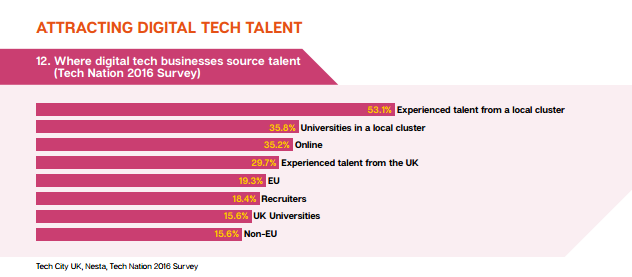
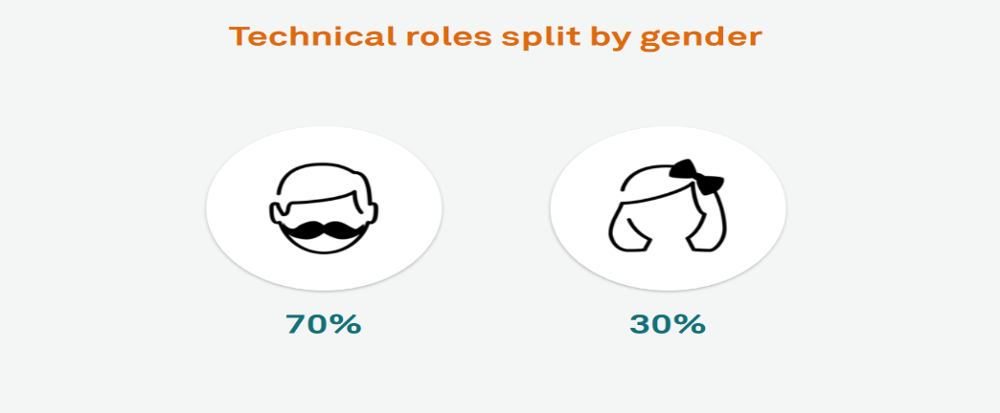
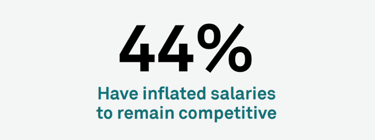

Employability type problems facing the digital industry
Due to a rapid growth in the IT sector, it is not surprising to know that a range of problems might occur. Skill shortages is one such problem which can cause a lack in the availability of experts in the digital industry. (Skills Summit 2016).
Along with inexperienced graduates and recruitment issues, businesses are also challenged by the scarcity of technicians. Furthermore, there is an occasional delay in keeping up with technological advances within the IT industry. To counter the skills demand, UK digital tech business is recruiting from diverse sources, as seen in the chart below (Tech nation 2016).
Moreover, the IT sector also holds a gender imbalance which means far more men are employed than women. Currently, the percentage ratio of men to women working in this industry is 60:40. (Digital skills 2016). The proportion of women is even lower (30%) in technical roles, since fewer positions are available for them. whereby the proportion split of men to women decreases.
Keeping qualified employees is another problematic aspect. It is problematic for employers and it is not surprising that employers will enhance salaries in order to retain employees. In addition, employees in certain highly qualified job roles within the IT sector will expect and demand wage increases, which further proliferates the skills shortage for numerous employers (Skills Summit 2016).
The above problems are thought provoking and once I enter the job market these problems will have a definite impact on me Examples of questions that I might ask in the future are the following: Should I be loyal to an employer or alternatively move onto a better-paid job? Should I request for more money if my job get demanding and more hours are required than contracted ? Should I decline a job due to insufficient training programmes within that company, even though it is a well-paid job. Should I stay within the U.K, or relocate to a country like USA, where my skills maybe appreciated more so or uproot myself from Manchester and move to London.
By looking at tech nation, I can see that throughout the country, policymakers are prioritising the development of local clusters and this is happening both north and south of the country. In the article, 'Does ICT investment widen the growth gap', the authors state that there is a positive correlation between ICT investment and economic growth. As explained in tech nation, nationwide innovative systems are being developed and fostered, such as talent, research and finance. Manchester is one such cluster and it has established itself as one of the top five clusters in the UK, with the second highest GVA growth and digital employment over 50,000.
Rise, The Sharp Project, Innospace, the Landing, Together and SpaceportX provide space and assistance for startups, while MediaCityUK also contributes to Manchester's future growth plans (Tech nation 2016). Moreover, the government is injecting funds into Manchester in order to help build and push forward the technological industry. In light of this, my future career within the IT sector in Manchester seems promising. Roll on Manchester Silicon valley!!!
Of course, the cluster in Manchester is not like the real Silicon Valley in California, however I am content with a mini version of Silicon Valley in Manchester and my future in digital industry seems favourable.
Finally, by looking at Digital skill 2016, I can see that linking bridges between education and industry are being currently promoted, which will continue into the foreseeable future. Starting with careers advice, then moving onto student engagement events and ultimately mentoring schemes being available, which will help staff at all levels and thereby progress their careers.
![https://niskanencenter.org/wp-content/u ploads/2016/09/siliconvalley-blogart.jpg [Accessed 15/11/2016]](https://niskanencenter.org/wp-content/u ploads/2016/09/siliconvalley-blogart.jpg){kind=link}
![https://niskanencenter.org/wp-content/uplo ads/2016/09/manchester-blogart.jpg [Accessed 15/11/2016]](https://niskanencenter.org/wp-content/uplo ads/2016/09/manchester-blogart.jpg){kind=link}